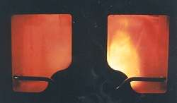
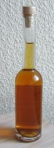

|
| Wie wird die Rotbuche genutzt?
Das Holz der Rotbuche ist wertvoll.
Es wird zu Möbeln und Spielzeug verarbeitet.
Buchenholz ist auch ein gutes Brennholz.
 |  Die ölhaltigen Samen sind essbar und gesund.
Das Bucheckernöl wird in der Küche verwendet.
|